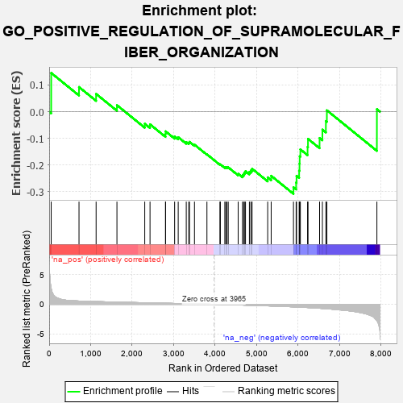
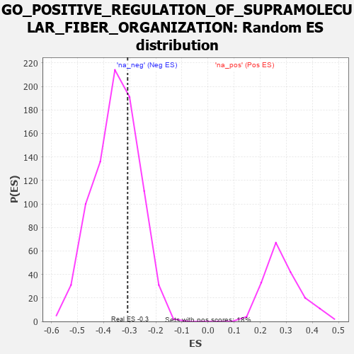

| | | Dataset | 7d |
| Phenotype | NoPhenotypeAvailable |
| Upregulated in class | na_neg |
| GeneSet | GO_POSITIVE_REGULATION_OF_SUPRAMOLECULAR_FIBER_ORGANIZATION |
| Enrichment Score (ES) | -0.30787632 |
| Normalized Enrichment Score (NES) | -0.8752209 |
| Nominal p-value | 0.67965895 |
| FDR q-value | 0.96490794 |
| FWER p-Value | 1.0 |
Table: GSEA Results Summary

Fig 1: Enrichment plot: GO_POSITIVE_REGULATION_OF_SUPRAMOLECULAR_FIBER_ORGANIZATION
Profile of the Running ES Score & Positions of GeneSet Members on the Rank Ordered List
| PROBE | GENE SYMBOL | GENE_TITLE | RANK IN GENE LIST | RANK METRIC SCORE | RUNNING ES | CORE ENRICHMENT | | 1 | TGFB3 | | | 49 | 2.654 | 0.1452 | No |
| 2 | ID1 | | | 719 | 0.555 | 0.0924 | No |
| 3 | NCK2 | | | 1131 | 0.458 | 0.0667 | No |
| 4 | DRG1 | | | 1633 | 0.368 | 0.0244 | No |
| 5 | WASF1 | | | 2303 | 0.259 | -0.0452 | No |
| 6 | MET | | | 2430 | 0.240 | -0.0474 | No |
| 7 | FER | | | 2803 | 0.183 | -0.0839 | No |
| 8 | BRK1 | | | 2805 | 0.183 | -0.0736 | No |
| 9 | WNT4 | | | 3023 | 0.146 | -0.0927 | No |
| 10 | GPX1 | | | 3109 | 0.135 | -0.0956 | No |
| 11 | SMAD3 | | | 3303 | 0.105 | -0.1140 | No |
| 12 | FMN1 | | | 3363 | 0.095 | -0.1160 | No |
| 13 | GMFB | | | 3381 | 0.091 | -0.1130 | No |
| 14 | FES | | | 3501 | 0.077 | -0.1236 | No |
| 15 | SPAST | | | 3801 | 0.027 | -0.1598 | No |
| 16 | MTOR | | | 4114 | -0.025 | -0.1977 | No |
| 17 | ABL1 | | | 4125 | -0.027 | -0.1975 | No |
| 18 | ARPC2 | | | 4232 | -0.047 | -0.2081 | No |
| 19 | ARL2 | | | 4254 | -0.050 | -0.2079 | No |
| 20 | WNT11 | | | 4282 | -0.056 | -0.2081 | No |
| 21 | BAG4 | | | 4314 | -0.061 | -0.2085 | No |
| 22 | ABI2 | | | 4554 | -0.106 | -0.2326 | No |
| 23 | ARPC3 | | | 4659 | -0.129 | -0.2384 | No |
| 24 | LIMK1 | | | 4684 | -0.136 | -0.2336 | No |
| 25 | ARF6 | | | 4704 | -0.140 | -0.2281 | No |
| 26 | WASF3 | | | 4730 | -0.145 | -0.2230 | No |
| 27 | WDR1 | | | 4824 | -0.163 | -0.2254 | No |
| 28 | DLG1 | | | 4860 | -0.169 | -0.2202 | No |
| 29 | CLU | | | 4889 | -0.174 | -0.2138 | No |
| 30 | PICK1 | | | 5265 | -0.263 | -0.2461 | No |
| 31 | EPHA1 | | | 5349 | -0.285 | -0.2403 | No |
| 32 | ARPC4 | | | 5886 | -0.430 | -0.2833 | Yes |
| 33 | DCTN1 | | | 5950 | -0.454 | -0.2654 | Yes |
| 34 | ACTN2 | | | 5960 | -0.458 | -0.2404 | Yes |
| 35 | JMY | | | 6023 | -0.479 | -0.2209 | Yes |
| 36 | CKAP5 | | | 6032 | -0.482 | -0.1944 | Yes |
| 37 | RAC1 | | | 6036 | -0.484 | -0.1672 | Yes |
| 38 | EVL | | | 6052 | -0.490 | -0.1412 | Yes |
| 39 | TPM1 | | | 6226 | -0.545 | -0.1319 | Yes |
| 40 | CDC42 | | | 6236 | -0.548 | -0.1018 | Yes |
| 41 | TRPV4 | | | 6515 | -0.668 | -0.0987 | Yes |
| 42 | ARF1 | | | 6583 | -0.701 | -0.0672 | Yes |
| 43 | CLIP1 | | | 6667 | -0.746 | -0.0351 | Yes |
| 44 | PAK1 | | | 6691 | -0.757 | 0.0051 | Yes |
| 45 | CAV3 | | | 7896 | -2.739 | 0.0095 | Yes |
Table: GSEA details [plain text format]

Fig 2: GO_POSITIVE_REGULATION_OF_SUPRAMOLECULAR_FIBER_ORGANIZATION: Random ES distribution
Gene set null distribution of ES for GO_POSITIVE_REGULATION_OF_SUPRAMOLECULAR_FIBER_ORGANIZATION